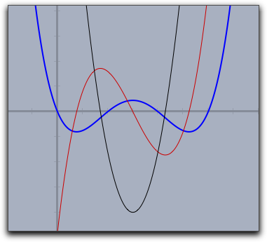
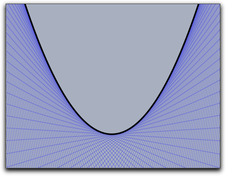
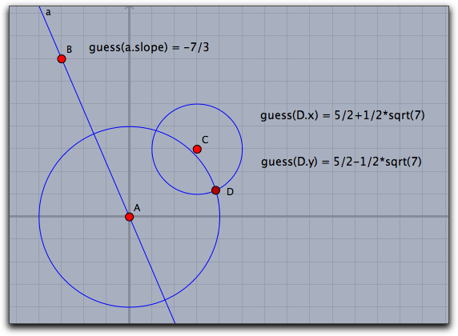
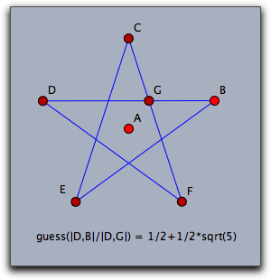
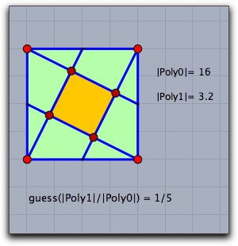
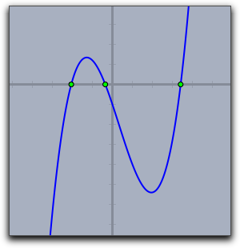

d(<function>,<var>)f(x):=(x-3)*(x-2)*(x-1)*x*.4; g(x):=d(f(#),x); h(x):=d(g(#),x); plot(f(x),size->2); plot(g(x),color->(0.8,0,0)); plot(h(x),color->(0,0,0));
f(x) 、赤の線が第１次導関数 g(x) 、そして黒の線が第２次導関数 h(x)のグラフです。 |
f(x) が微分可能ならば、導関数は d(f(#),x) で定義されます。ここで、x が微分する変数を示しています。導関数の値は、式(f(x+eps)-f(x-eps))/2eps |
eps は十分小さい数です。これは、この点における実際の微分係数に十分近い値になります。しかし、連続して何度かこの演算子を使うと、かなり誤差を生じます。5回も微分すると結果は使えません。したがって第５次導関数ではもはや理にかなった計算はできません。eps は 0.0001 に設定されています。この値は、高次導関数の信頼性と精度のバランス上十分理にかなった値です。この値は修飾子 eps-><number> によって変更することができます。tangent(<function>,<var>)f(x):=(x^2)/4; repeat(250,start->-30,stop->30,x, t=tangent(f(#),x); draw(t,alpha->.3); ); plot(f(x),size->3,color->(0,0,0));
 |
guess(<number>)a+b*sqrt(c), |
a, b, c は、約1000以下の分母と分子で表される有理数です。入力された数が十分な精度で表現できるならば、上記の形で表します。 そうでなければ、 guess 演算子はそのまま入力値を返します。 |


roots(<list>)roots([1,0,1]) とします。結果は複素数 [-0-i*1,-0+i*1] です。a=0.4; b=-0.4; c=-3; d=-1; f(x):=a*x^3+b*x^2+c*x+d; plot(f(x),size->2); r=roots([d,c,b,a]); forall(r,draw((#,0)))
 |
Page last modified on Wednesday 07 of March, 2012 [09:52:49 UTC].
The original document is available at
http://doc.cinderella.de/tiki-index.php?page=CalculusJ